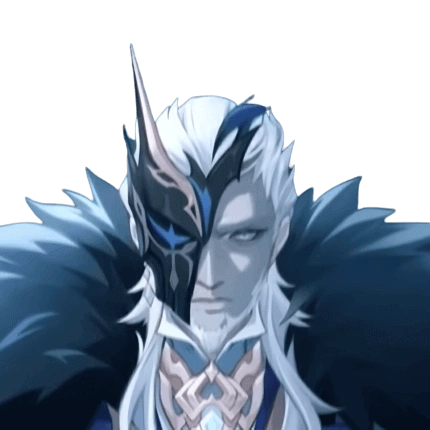
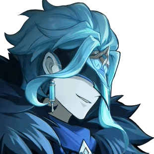
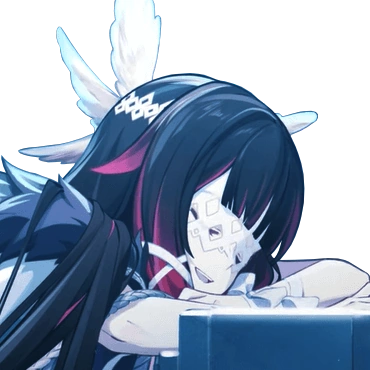
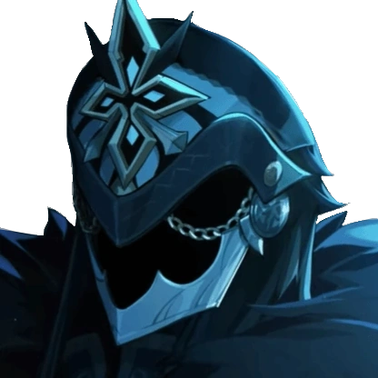
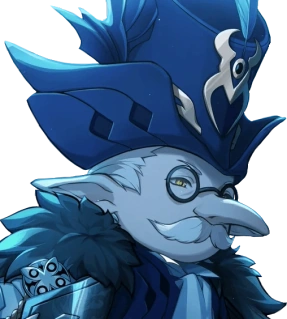
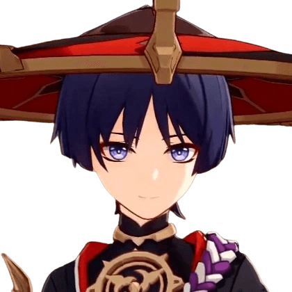
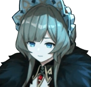
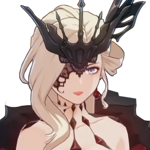
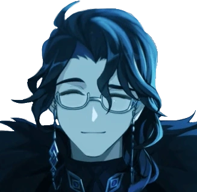
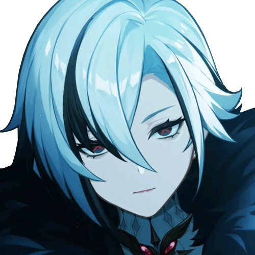

Hoyoverse, Hoyo. (2019). Genshin Impact [Official Art]. Wallpapers Den. https://wallpapersden.com/genshin-impact-2019-wallpaper/1680x1050/
In the game Genshin Impact, some of the main antagonists are the Abyss Order and the Fatui Harbingers. Causing chaos throughout the story, they are responsible for keeping the traveller separated from their sibling and stealing the gnosis of each Archon in Teyvat’s seven nations. The Fatui is an organization of people from Snezhnaya, inspired by Russian culture ruled by the Tsaritsa, the Cryo Archon. The Fatui’s 11 most powerful members are known as the "11 Fatui Harbingers." Here is a table further explaining each Fatui Harbinger mentioned throughout the storyline.
| Rank | Name | Alias | Image | First Appearence | Fun Fact |
|---|---|---|---|---|---|
| 1 | Pierro | The Jester |  | Teyvat Chapter Interlude Teaser: A Winter Night's Lazzo | Homeland: Khaenri'ah |
| 2 | Il Dottore | The Doctor |  | Truth Amongst the Pages of Purana: Dreams, Emptiness, Deception (Archon Quest Chapter 3: Act 3) | Expelled from Sumeru Akademiya for making clones of himself |
| 3 | Columbina | Damselette |  | Teyvat Chapter Interlude Teaser: A Winter Night's Lazzo | Looks and acts angelic but very dangerous |
| 4 | Il Capitano | The Captain |  | Teyvat Chapter Interlude Teaser: A Winter Night's Lazzo | Strong fighter |
| 5 | Pulcinella | The Rooster |  | Teyvat Chapter Interlude Teaser: A Winter Night's Lazzo | Caregiver of Tartaglia (Childe’s) family speculated to have an ulterior motive |
| 6 | Scaramouche | The Balladeer |  | Omnipresence Over Mortals: Omnipresence Over Mortals (Archon Quest Chapter 2: Act 3) | An unwanted puppet created by Ei for expressing too much emotion who has left the Fatui |
| 7 | Sandrone | Marionette |  | Teyvat Chapter Interlude Teaser: A Winter Night's Lazzo | Has a machine constantly accompanying her |
| 8 | La Signora | The Fair Lady |  | The Outlander Who Caught the Wind: Song of the Dragon and Freedom (Archon Quest Prologue: Act 3) | Real name is Rosalyne-Kruzchka Lohefalter, dead at the hands of the Raiden Shogun |
| 9 | Pantalone | Regrator |  | Teyvat Chapter Interlude Teaser: A Winter Night's Lazzo | Richest Fatui Harbinger |
| 10 | Arlecchino | The Knave |  | Teyvat Chapter Interlude Teaser: A Winter Night's Lazzo | Said to be a wolf in sheep's clothing |
| 11 | Tartaglia | Childe | |
Farewell, Archaic Lord: The Land Amidst Monoliths (Archon Quest Chapter 1: Act 1) | Weakest Fatui Harbinger |